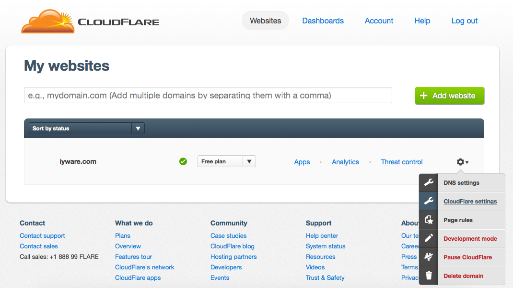
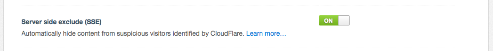
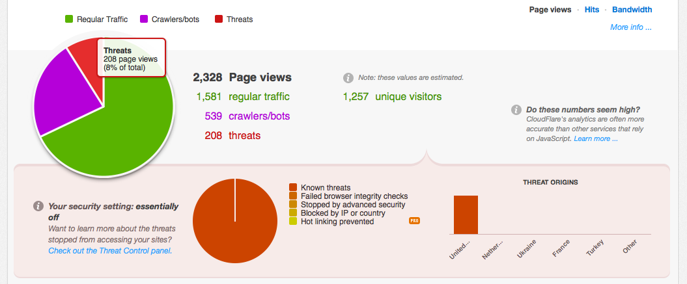

Secure Ghost With Cloudflare SSE
Cloudflare is a great company for so many reasons. They provide DNS, CDN, and security all in one ‐ even on their free tier. If you're not using Cloudflare yet, you should consider it. In this post we'll look at integrating Cloudflare SSE (Server Side Exclusion) to your Ghost theme.
Cloudflare SSE is a cool feature that will simply strip out any content that you want at the time it's being served to the user, but only for users (IP addresses/ranges) that Cloudflare knows to be a threat. So instead of completely blocking a user from your site in the event of a false-positive, which happens, you can prevent them from seeing only certain info like contact info, or comments.
Enable SSE
If you don't have your domain set up with Cloudflare yet you'll need to that, which is beyond the scope of this article, but fairly straight forward. After you've added your domain to Cloudflare click the 'settings' wheel and select "CloudFlare Settings" from the drop-down menu.

Depending on the security profile that you selected when configuring your domain you may or may not have different options enabled, but you'll need to check that SSE is enabled anyways. On the CloudFlare Settings page click the "Security Settings" tab.

Scroll down the settings page until until you see the "Server side exclude (SSE)" option and enable it.

That's it to enable you SSE on your site, but it won't do anything until you add the SSE tags to your blog template.
Modify Your Ghost Theme
Now that SSE is enabled you need to decide what exactly you want to exclude. Generally I exclude any calls to the author theme API with either {{author}} or {{#author}}{{/author}} as well as components of the @blog API. Again this is up to you.
Exclude Your Personal Info
In your theme find the post.hbs file and find the {{#author}}{{/author}} section. In order to exclude it you're simply going to wrap it in HTML comments <!--sse--><!--/sse--> like this:
<!--sse-->
{{#author}}
...
{{/author}}
<!--/sse-->
The default Ghost theme "Casper" should look like this:
<!--sse-->
{{! Everything inside the #author tags pulls data from the author }}
{{#author}}
{{#if image}}
<figure class="author-image">
<a class="img" href="{{url}}" style="background-image: url({{image}})"><span class="hidden">{{name}}'s Picture</span></a>
</figure>
{{/if}}
<section class="author">
<h4><a href="{{url}}">{{name}}</a></h4>
{{#if bio}}
<p>{{bio}}</p>
{{else}}
<p>Read <a href="{{url}}">more posts</a> by this author.</p>
{{/if}}
<div class="author-meta">
{{#if location}}<span class="author-location icon-location">{{location}}</span>{{/if}}
{{#if website}}<span class="author-link icon-link"><a href="{{website}}">{{website}}</a></span>{{/if}}
</div>
</section>
{{/author}}
<!--/sse-->
Now whenever a visitor that CloudFlare deems a "threat" accesses a post that whole section will be excluded.
Exclude Share Links
In post.hbs right below the {{author}} section you can remove the "share" links:
<!--sse-->
<section class="share">
<h4>Share this post</h4>
<a class="icon-twitter" href="https://twitter.com/share?text={{encode title}}&url={{url absolute="true"}}"
onclick="window.open(this.href, 'twitter-share', 'width=550,height=235');return false;">
<span class="hidden">Twitter</span>
</a>
<a class="icon-facebook" href="https://www.facebook.com/sharer/sharer.php?u={{url absolute="true"}}"
onclick="window.open(this.href, 'facebook-share','width=580,height=296');return false;">
<span class="hidden">Facebook</span>
</a>
<a class="icon-google-plus" href="https://plus.google.com/share?url={{url absolute="true"}}"
onclick="window.open(this.href, 'google-plus-share', 'width=490,height=530');return false;">
<span class="hidden">Google+</span>
</a>
</section>
<!--/sse-->
Exlude Comments
If you've integrated comments into your site, you're likely doing so via JavaScript loading as Ghost (as of this writing) doesn't support native comments. So you can simply exclude those too (in post.hbs):
<!--sse-->
<div id="disqus_thread"></div>
<script type="text/javascript">
var disqus_shortname = 'yoursite';
(function() {
var dsq = document.createElement('script'); dsq.type = 'text/javascript'; dsq.async = true;
dsq.src = '//' + disqus_shortname + '.disqus.com/embed.js';
(document.getElementsByTagName('head')[0] || document.getElementsByTagName('body')[0]).appendChild(dsq);
})();
</script>
<noscript><p style="text-align:center;"><small>Please enable JavaScript to view the <a href="https://disqus.com/home/forums/yoursite/">comments powered by Disqus.</a></small></p></noscript>
<!--/sse-->
And now a "threat" won't be able to access your comments via your site, of course I can't comment on the security of Disqus itself.
Exclude Anything
You can exclude anything you want from your theme templates, if you've added say a phone number or an email address that can be excluded too.
<!--sse-->danny @ iyware.com<!--/sse-->
Exclude Post Content
Due to the ethos behind Markdown HTML comments are not supported within the Ghost editor so you won't be able to add SSE to the content of a post.
Conclusion
Using CloudFlare SSE is just one small step toward securing your Ghost blog but it should be an effective step. If you trust CloudFlare's analytics there's quite a bit of malicious activity out there (8% on my site).

My guess would be that this is mostly bots looking for vulnerabilities, but still they're out there trying to crawl your personal info, spam your comments, and generally ruin your day. So take a few minutes and add another layer of security to your blog.